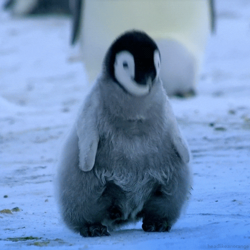

Penguin, (order Sphenisciformes), any of 18-21 species of flightless marine birds that live only in the Southern Hemisphere.
The majority of species live not in Antarctica but rather between latitudes 45° and 60° S, where they breed on islands.
A few penguins inhabit temperate regions, and one, the Galapagos penguin (Spheniscus mendiculus), lives at the Equator.